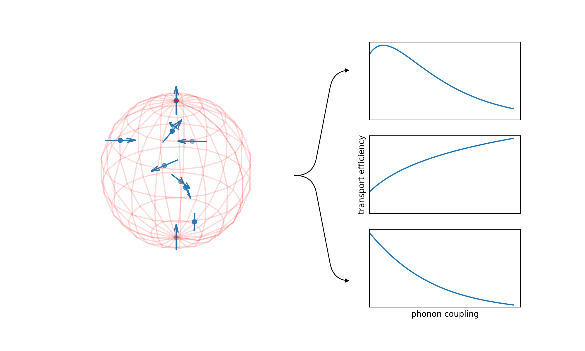

## Weekly Update 08/11/2021 wait... _November?!_ --- ### Last Week 1. Drew up calculation schedule 2. Properly generated python environments to copy the clusters 3. Set up SSH over WSL so I can synchronise all my data generation now 4. Calculated a first 'cross-section' of dipole data to see if dimensionality affects things --- #### Trying to visualise next paper figures  <p>Trying to show that a single network is not guaranteed to have any one class of response to phonon coupling.</p> -- #### First Draft <img class="r-stretch" src="./img/wk93-fig1Sketch.png" title="Sketch of 3D dipole network figure. " style = "background: #F0EAD6"> <p>An... earlier sketch</p> --- ### This Week 1. Perform analysis on all my new data (Key Q: Does dimensionality matter?) 2. From this, determine what parameter space is needed for the paper 3. Refine filtering and analysis by taking advantage of the new data I store 4. Plan out other figures and reading for this paper 5. Write talk for Exeter next Wednesday NB: Obviouslly, I will be away from Wednesday next week, back on Monday!